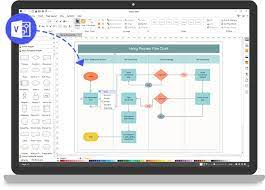

| |
visio |
é um aplicativo para criação e diagramas.
 |
Organizar ideias complexas visualmente. Usar centenas de modelos, incluindo fluxogramas, linhas do tempo, plantas baixas e muito mais. Adicionar e conectar formas, textos e imagens para mostrar as relações em seus dados. |
|  | Abra o Visio na Web. Se o Visio já estiver aberto, selecione Arquivo > Novo. Observação: Se você tiver Plano do Visio 2, você também poderá baixar e instalar o aplicativo da área de trabalho do Visio. Selecione Criar no modelo que você deseja ou selecione Criar em Diagrama Básico para começar do zero. |
 |
Microsoft Visio é um software para desenhar uma grande variedade de diagramas. Estes incluem fluxogramas, organogramas, projetos, plantas, diagramas de fluxo de dados, diagramas de fluxo de processos, processos de negócios, modelagem, diagramas de raias, mapas 3D e muitos mais. |